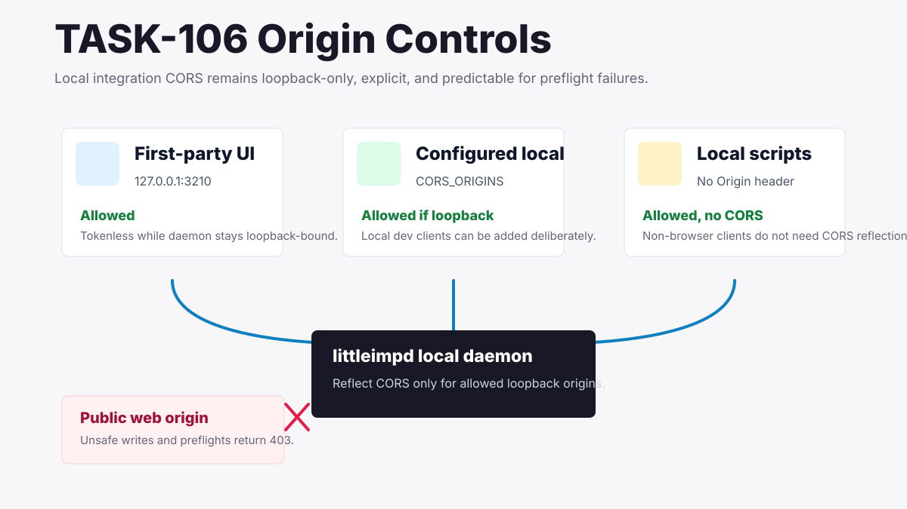
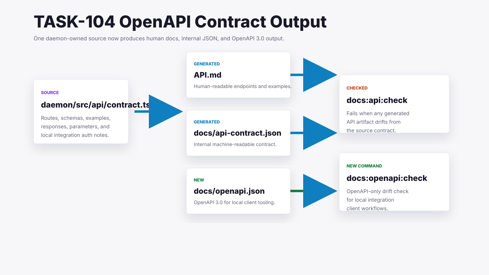
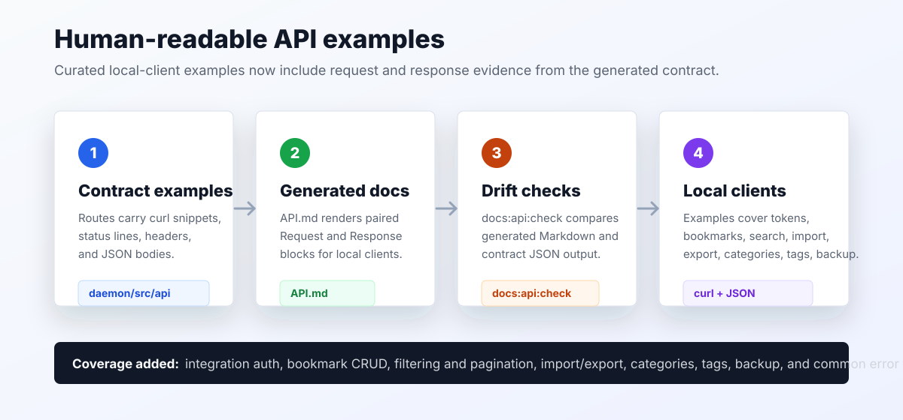
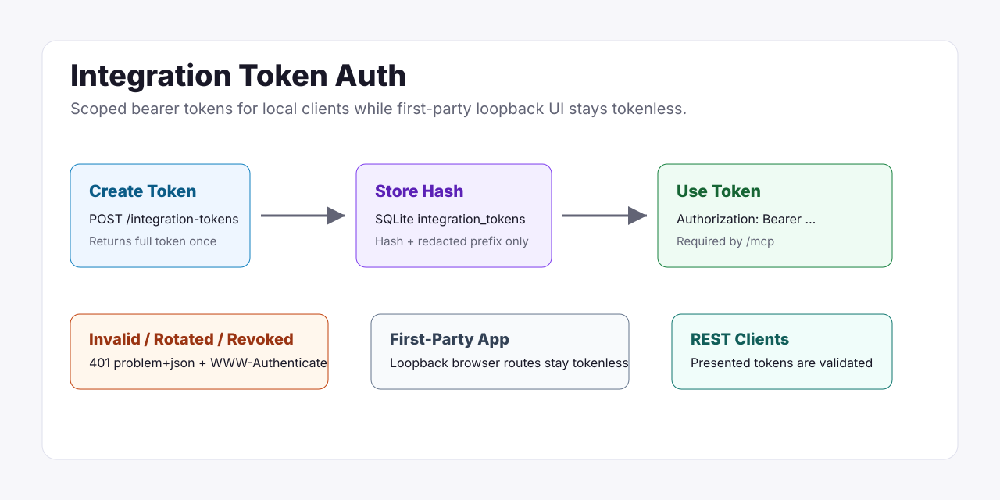
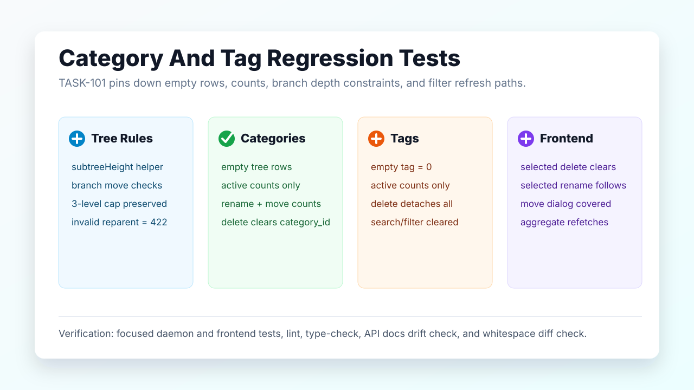

Little Imp Task Reports
June 2026
Monthly archive of task reports for visible product, release, documentation, and runtime behavior changes.
Reports

Integration CORS And Origin Controls
Added explicit unsafe preflight rejection, missing-Origin local client coverage, and generated CORS setup docs for loopback-only local integrations.

OpenAPI Contract Output
Added generated OpenAPI 3.0 output, OpenAPI-only drift commands, and generator coverage for local integration client schemas, parameters, responses, pagination, and MCP auth.

Human Readable API Examples
Added generated request and response examples for local integration clients across tokens, bookmarks, search, import/export, categories, tags, backup, and error flows.

Integration Token Authentication
Added managed local integration bearer tokens with hashed storage, MCP protection, optional REST validation, rotation, and revocation.

Category And Tag Regression Tests
Added focused daemon and frontend regression coverage for category/tag counts, branch reparent constraints, deletes, and filter refresh behavior.